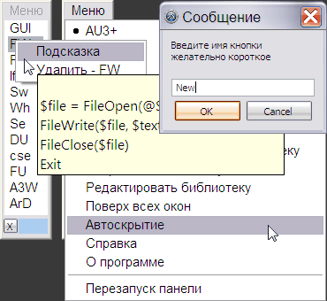

Panel_Function
Назначение
Вставляет фрагменты кода в окно редактора. Всплывает при наведении на край экрана. Устаревший но всё ещё актуальный вариант.

Панель функций - предназначена для вставки текста или готовых конструкций программного кода или в блокнот-редактор, браузер, аську. Горячей клавишей Ctrl+F11 можно добавить выделенный код/текст в ячейку утилиты, заполнив имя добавляемого образца в диалоговом окне. Для вставки образца в редактор достаточно кликнуть его имя в списке и активизируется указанная программа и текст вставляется в позицию, где установлен курсор. В меню можно выбрать текущий редактор для вставки текста. В контекстном меню элементов списка можно удалять пункты и просматривать их содержимое. Количество добавляемых библиотек не ограничено (если только размером экрана) и легко можно переключаться между ними. Светло-синее поле предназначено для перетаскивания окна. Имена пунктов подсвечиваются даже если панель узкая, настройки утилиты сохраняются при выходе. Размер панели можно изменить растягиванием окна.
В конфигурационный файле можно поменять правкой.